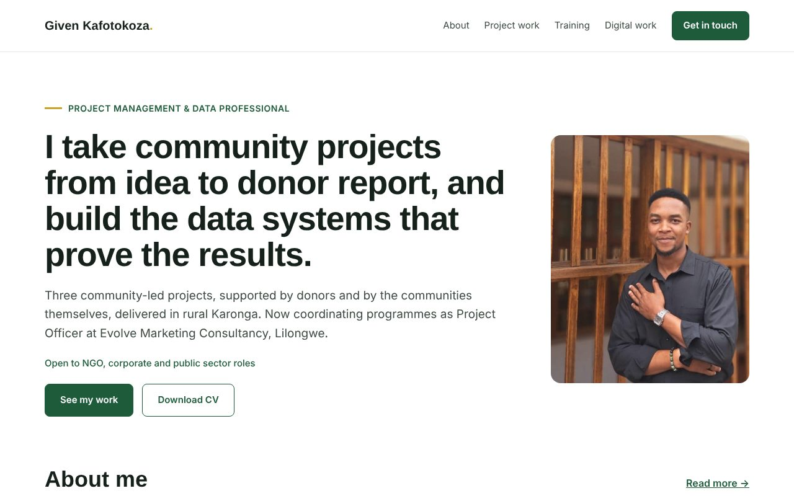
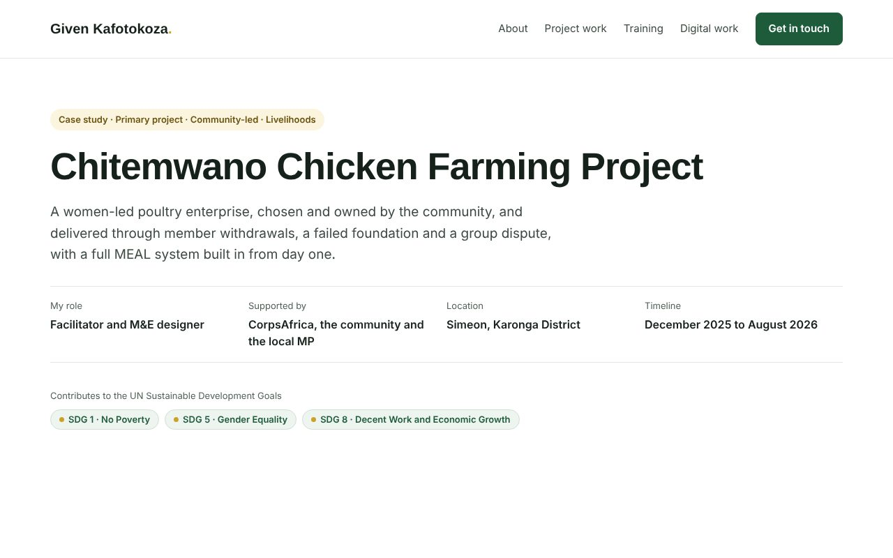
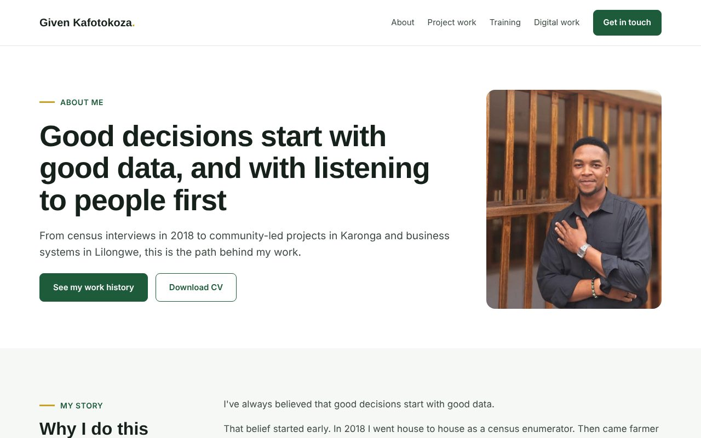
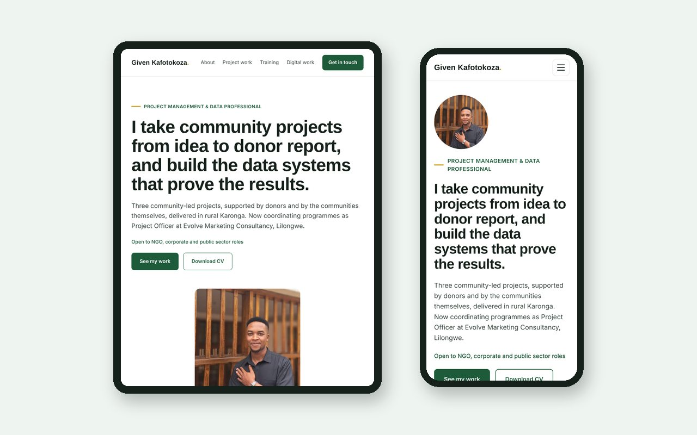

This portfolio website
Designed and hand-coded from scratch, so employers can see real projects, real numbers and real systems in one place, on any device.




The challenge
A CV can say "managed a budget" or "built a system", but it can't show it. I wanted one place where an employer could see the work itself: the photos, the numbers, the charts and the systems, with the story behind each project.
It also had to load quickly on mobile data, read well on any screen, and be easy to find on Google.
What I built
Case studies from real work
Each project page follows the same path: the challenge, how we did it, what went wrong, the results and the lessons.
Interactive charts
Budgets, funding sources, price changes and training scores, drawn with Chart.js from my own datasets.
Phones, tablets and computers
Layouts that adapt to every screen, including a phone menu, smaller text and readable chart labels.
Fast on mobile data
Compressed photos that load only as you scroll, so pages open quickly even on a slow connection.
Found on Google
Page titles, descriptions, link previews, a sitemap and Google Search Console, so people searching my name can find me.
Privacy first
Cookie-free visitor statistics, no phone numbers online, sample data in system screenshots, and children's faces cropped out.
How I worked
Decided what an employer needs to see first, then shaped each page around problem, action and result.
Wrote the HTML, CSS and JavaScript myself in VS Code, keeping the site light and simple to maintain.
Checked every page on my phone and tablet, then fixed layouts, text sizes and chart labels until they read well.
Version control with Git, publishing on GitHub Pages, and small updates pushed as the work grows.